资源
课程
Lecture 19 Cameras, Lenses and Light Fields
Imaging = Synthesis + Capture
图像 = 合成 + 捕获
What' s Happening Inside the Camera?
探讨一下相机的内部结构
{kind=link}
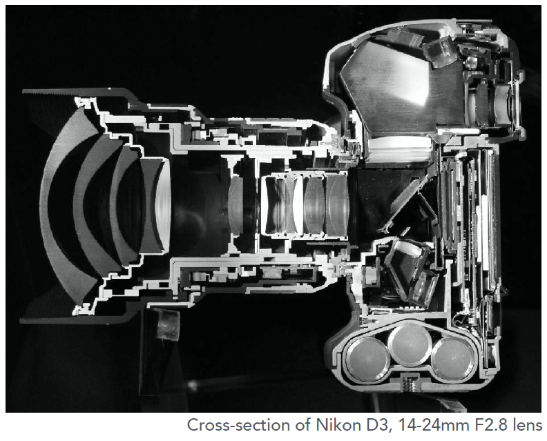
Pinholes & Lenses Form Image on Sensor
针孔和透镜在传感器上形成图像
{kind=link}
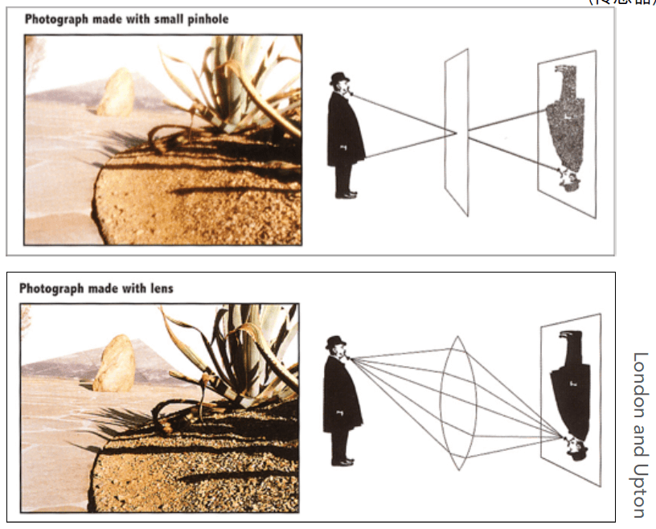
有两种成像方式：针孔成像和透镜成像
Shutter Exposes Sensor For Precise Duration
快门使传感器曝光时间精确
Inside a Camera at 10,000fps - The Slow Mo Guys - YouTube
快门在极微小的时间内打开，使传感器感光，然后关闭。
Sensor Accumulates Irradiance During Exposure
传感器在曝光期间积累辐照度
{kind=link}
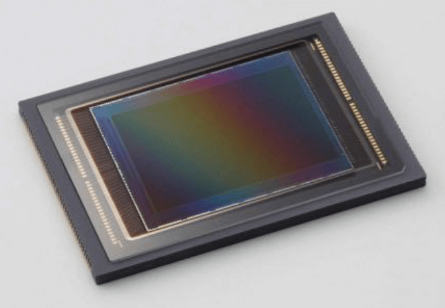
这就是感光芯片！
Why Not Sensors Without Lenses?
为什么不采用没有镜头的传感器？
{kind=link}
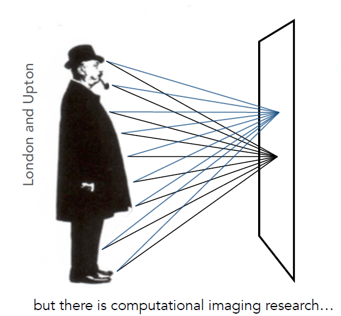
Each sensor point would integrate light from all points on the object, so all pixel values would be similar
每个传感器点都会整合物体上所有点的光，因此所有像素值都会相似（导致图像一片模糊）
i.e. the sensor records irradiance
即传感器记录辐照度
but there is computational imaging research…
但是现在也有计算成像研究。
Pinhole Image Formation
针孔成像
Pinhole Camera
针孔摄像机
{kind=link}
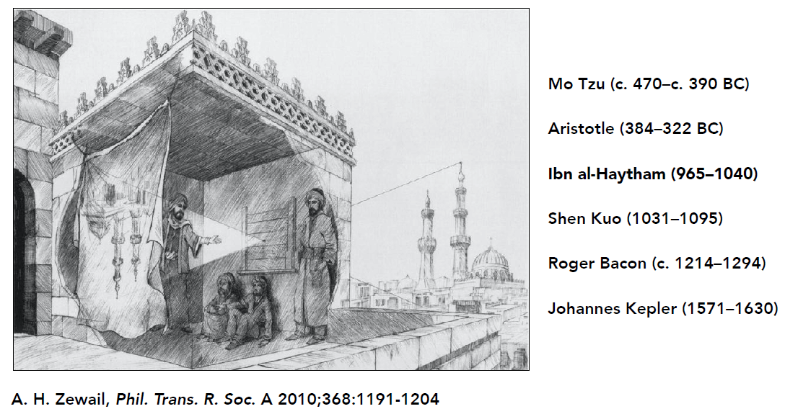
古人就会使用小孔成像投影了。
Largest Pinhole Photograph
最大的针孔照片
{kind=link}
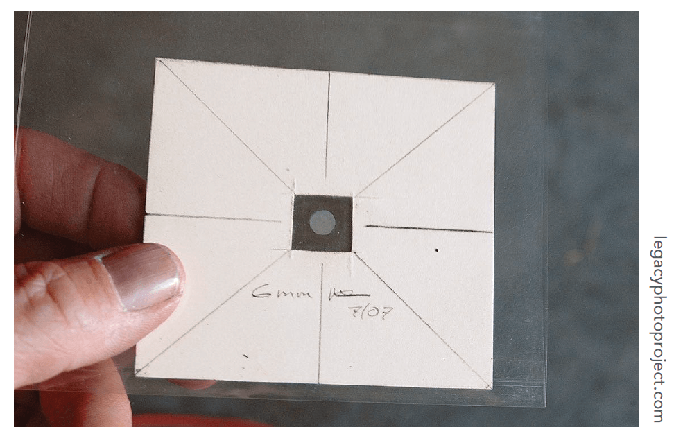
{kind=link}
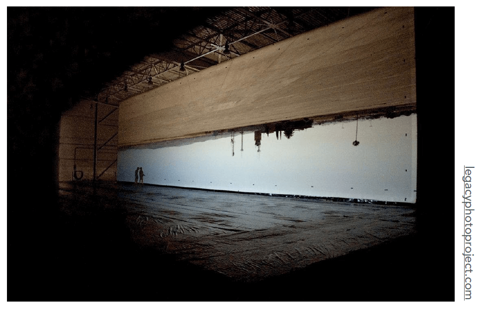
拍摄出的相片将不会有景深。
Field of View (FOV)
视野
Effect of Focal Length on FOV
焦距对视野的影响
{kind=link}
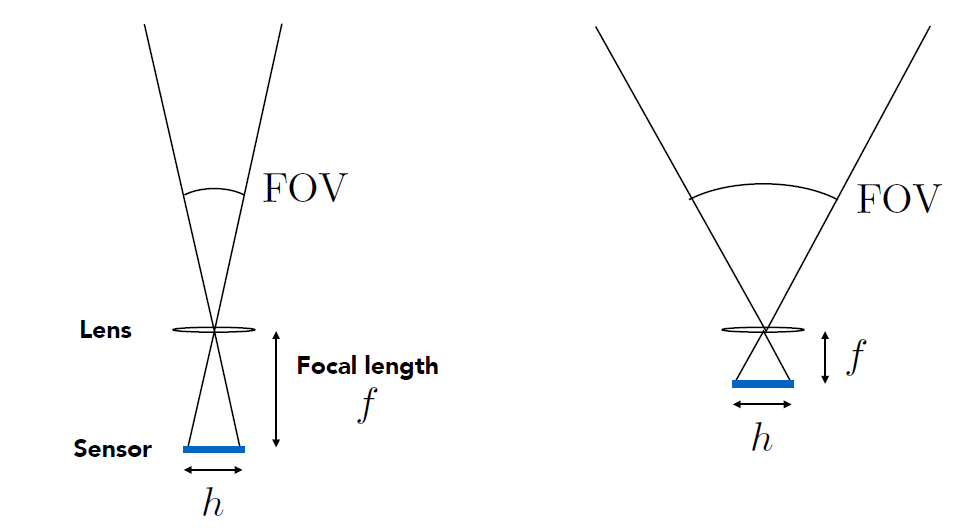
For a fixed sensor size, decreasing the focal length increases the field of view.
对于固定的传感器尺寸，减小焦距可以增加视野。
Focal Length v. Field of View
焦距与视野
{kind=link}
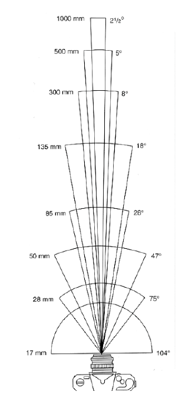
For historical reasons, it is common to refer to angular field of view by focal length of a lens used on a 35mm-format film (36 x 24mm)
由于历史原因，通常用 35mm 格式胶片（36 x 24mm）上使用的镜头焦距来表示视角
-
Examples of focal lengths on 35mm format:
35mm 格式焦距示例：
-
17mm is wide angle 104°
17mm 为广角 104°
-
50mm is a "normal" lens 47°
50mm 为“普通”镜头 47°
-
200mm is telephoto lens 12°
200mm 为远摄镜头 12°
-
-
Careful! When we say current cell phones have approximately 28mm "equivalent" focal length, this uses the above convention.
小心！当我们说当前手机的“等效”焦距约为 28mm 时，使用的是上述惯例。（说明手机的视角相当于 28mm 格式胶片的视角，而不是说手机真实焦距为 28mm，手机现在都没有那么厚）
{kind=link}
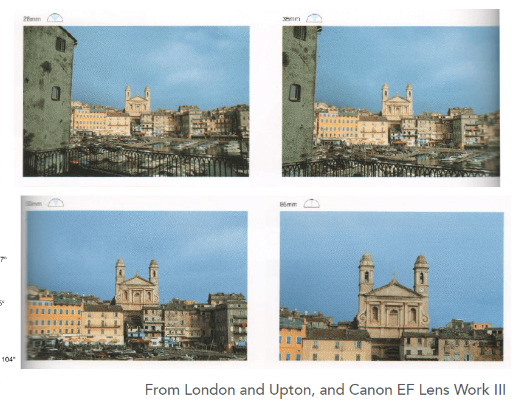
Effect of Sensor Size on FOV
{kind=link}
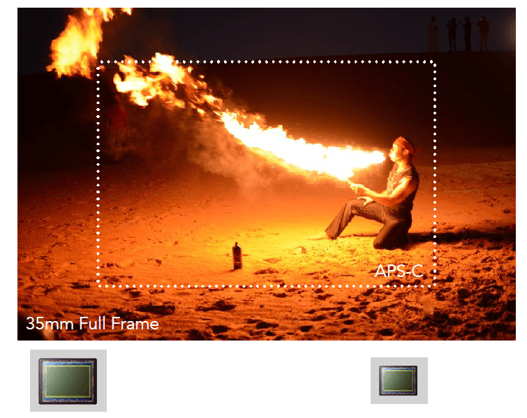
焦距不变的情况下，传感器越小，视野越小。
{kind=link}
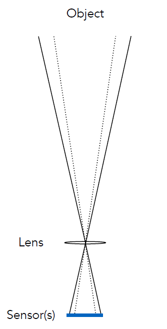
Sensor Sizes
{kind=link}
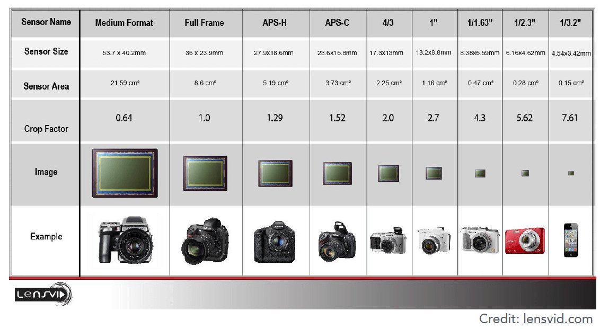
这就是为啥手机那么小，FOV 也可以跟相机差不多。
Maintain FOV on Smaller Sensor?
在较小的传感器上保持视场？
{kind=link}
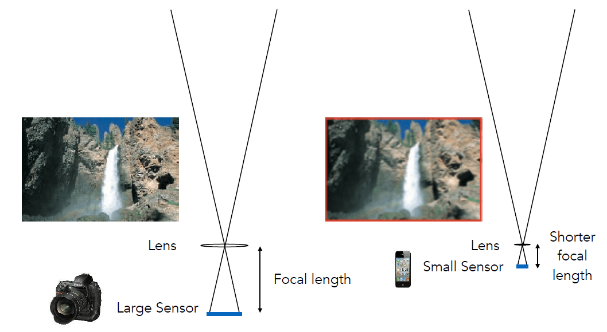
To maintain FOV, decrease focal length of lens in proportion to width/height of sensor
为了保持视场，应根据传感器的宽度/高度按比例减小镜头的焦距
Exposure
曝光
-
-
Exposure = time x irradiance
曝光 = 时间 x 辐照度
-
Exposure time ()
曝光时间 ()
-
Controlled by shutter
由快门控制
-
-
Irradiance ()
辐照度 ()
-
Power of light falling on a unit area of sensor
照射到传感器单位面积上的光功率
-
Controlled by lens aperture and focal length
由镜头光圈和焦距控制
-
Exposure Controls in Photography
摄影中的曝光控制
Aperture size
光圈大小
-
Change the f-stop by opening / closing the aperture (if camera has iris control)
通过打开/关闭光圈来更改光圈值（如果相机具有光圈控制功能）
Shutter speed
快门速度
-
Change the duration the sensor pixels integrate light
更改传感器像素积分光的持续时间
ISO gain (感光度)
-
Change the amplification (analog and/or digital) between sensor values and digital image values
更改传感器值和数字图像值之间的放大率（模拟和/或数字）
ISO 是摄影中用来衡量相机感光度的一个参数。ISO 值越高，相机的感光度就越高，相同的光线条件下，能够获得更亮的照片，但也容易产生更多的噪点（图像上的颗粒状干扰）。相反，ISO 值越低，相机的感光度就越低，需要更多的光线才能拍摄清晰的照片，但噪点会相对较少。
在不同的拍摄情境下，你可以通过调整 ISO 来平衡光线条件和图像质量。例如，在光线较暗的情况下，你可以提高 ISO 来增加感光度，使相机更容易捕捉到光线，但需要注意可能产生的噪点；而在光线充足的情况下，你可以选择较低的 ISO 值，以获得更清晰、更细腻的图像质量。
Exposure: Aperture, Shutter, Gain (ISO)
曝光：光圈、快门、增益（ISO）
{kind=link}
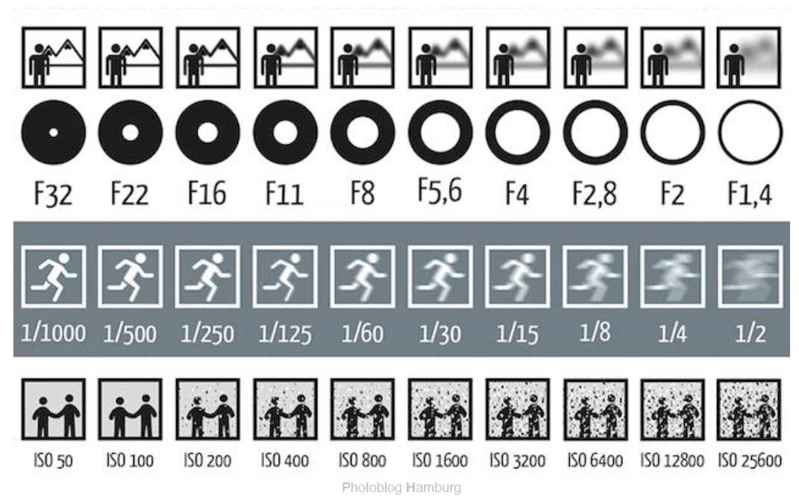
光圈越大，远处进的光越多，越模糊。
快门越慢，单位时间内进的光越多，对高速物体越模糊。
ISO 太高，容易出现噪声。
ISO (Gain)
Third variable for exposure
曝光的第三个变量
Film: trade sensitivity for grain
胶片：用颗粒感换取灵敏度
Digital: trade sensitivity for noise
数字：用噪声换取灵敏度
-
Multiply signal before analog-to-digital conversion
在模数转换之前乘以信号
-
Linear effect (ISO 200 needs half the light as ISO 100)
线性效果（ISO 200 所需的光线是 ISO 100 的一半）
ISO Gain vs Noise in Canon T2i
{kind=link}
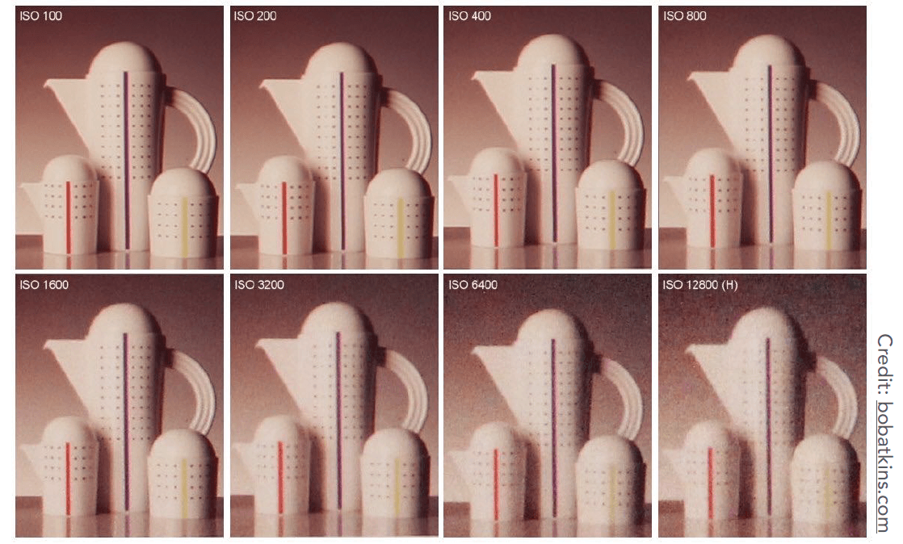
ISO 越高，越容易出现噪点。
F-Number (F-Stop): Exposure Levels
F 值 (F 档)：曝光级别
Written as FN or F/N. N is the f-number.
写作 FN 或 F/N。N 是 f 值。
Informal understanding: the inverse-diameter of a round aperture
非正式理解：圆形光圈的直径倒数
{kind=link}
Side Effect of Shutter Speed
快门速度的副作用
{kind=link}
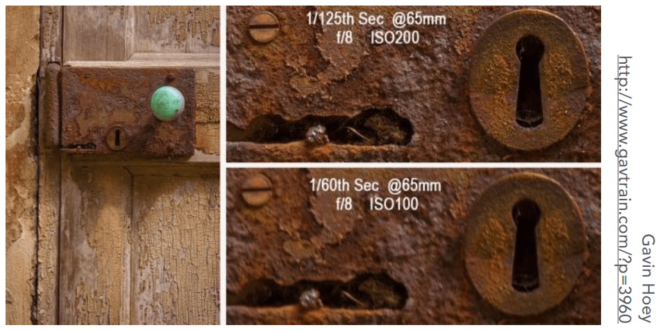
Motion blur: handshake, subject movement
运动模糊：握手、主体运动
Doubling shutter time doubles motion blur
快门时间加倍，运动模糊加倍
Note: motion blur is not always bad!
注意：运动模糊并不总是坏事！
Tip: think about anti-aliasing
提示：考虑抗锯齿
{kind=link}
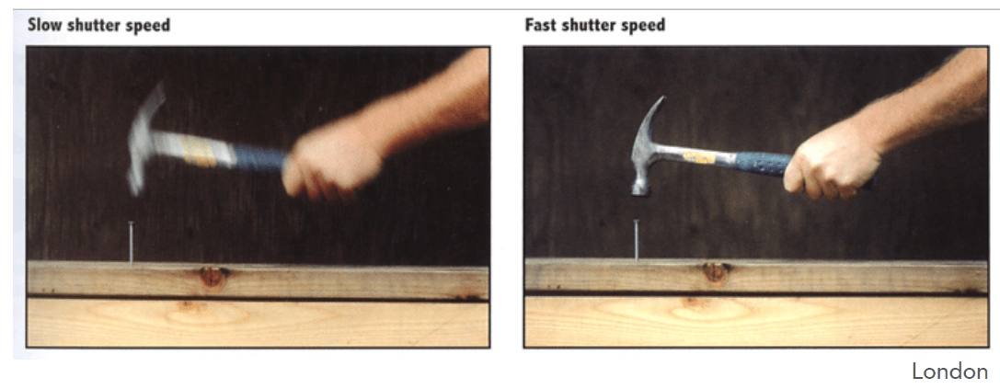
适当的运动模糊可以营造出物体在告诉移动的氛围。
Rolling shutter: different parts of photo taken at different times
滚动快门：在不同时间拍摄照片的不同部分
{kind=link}
飞机螺旋桨高速运转时，导致画面扭曲。
Constant Exposure: F-Stop vs Shutter Speed
恒定曝光：光圈大小与快门速度
Example: these pairs of aperture and shutter speed give equivalent exposure
例如：这些光圈和快门速度的组合提供等效曝光
| F-Stop | 1.4 | 2.0 | 2.8 | 4.0 | 5.6 | 8.0 | 11.0 | 16.0 | 22.0 | 32.0 |
| Shutter | 1/500 | 1/250 | 1/125 | 1/60 | 1/30 | 1/15 | 1/8 | 1/4 | 1/2 | 1 |
If the exposure is too bright/dark, may need to adjust f-stop and/or shutter up/down.
如果曝光太亮/太暗，可能需要调整光圈和/或快门速度。
-
Photographers must trade off depth of field (?) and motion blur for moving subjects
摄影师必须权衡景深（？）和运动模糊以拍摄移动的物体
Fast and Slow Photography
高速/低速摄影
High-Speed Photography
Normal exposure = extremely fast shutter speed x (large aperture and/or high ISO)
正常曝光 = 极快的快门速度 x （大光圈和/或高 ISO）
{kind=link}
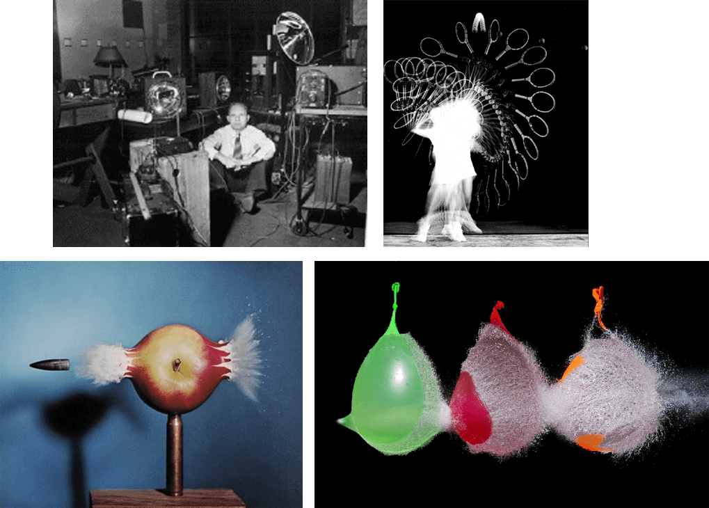
Long-Exposure Photography
快门时间长，导致一段时间内进了一堆光，产生独特的艺术效果（如延时摄影）。
{kind=link}
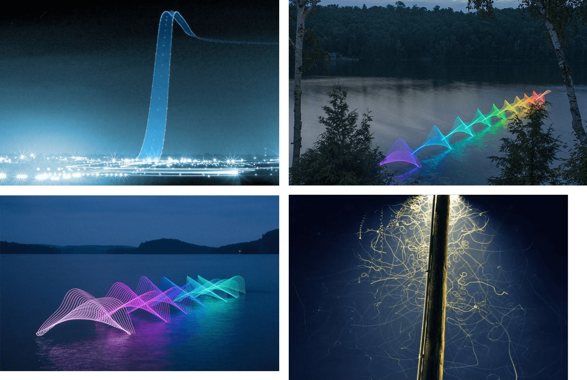
Thin Lens Approximation
透镜近似
Real Lens Designs Are Highly Complex
真实镜头的结构很复杂。
{kind=link}
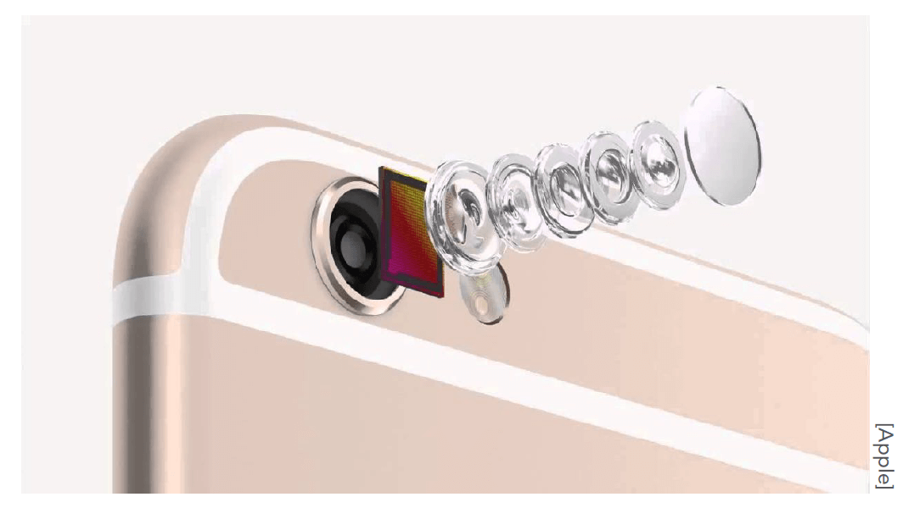
Real Lens Elements Are Not Ideal – Aberrations
真实镜头元件并不理想——像差
{kind=link}
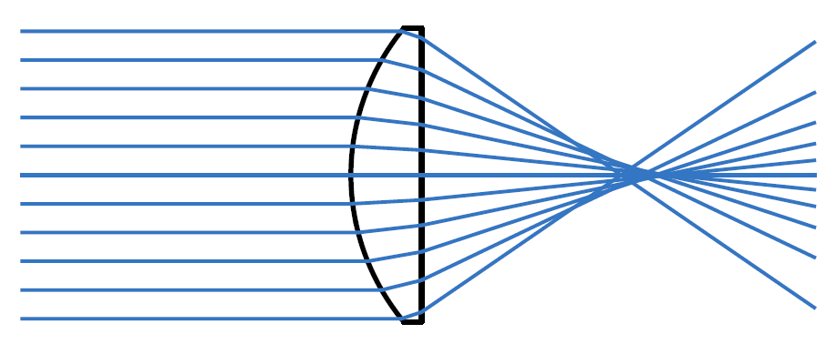
Real plano-convex lens (spherical surface shape).
真正的平凸透镜（球面形状）。
Lens does not converge rays to a point anywhere.
透镜不会将光线会聚到任何地方的一点（没有焦点）。
Ideal Thin Lens – Focal Point
理想的薄透镜（厚度不计）——焦点
{kind=link}
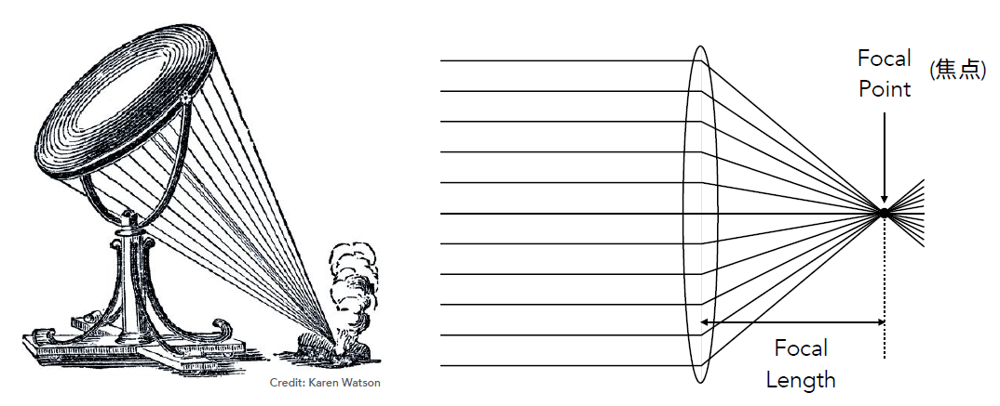
(1) All parallel rays entering a lens pass through its focal point.
进入透镜的所有平行光线都会通过其焦点。
(2) All rays through a focal point will be in parallel after passing the lens.
通过焦点的所有光线在通过透镜后都将是平行的。
(3) Focal length can be arbitrarily changed (in reality, yes!).
焦距可以任意改变（实际上，是的！）。
The Thin Lens Equation
薄透镜方程
{kind=link}
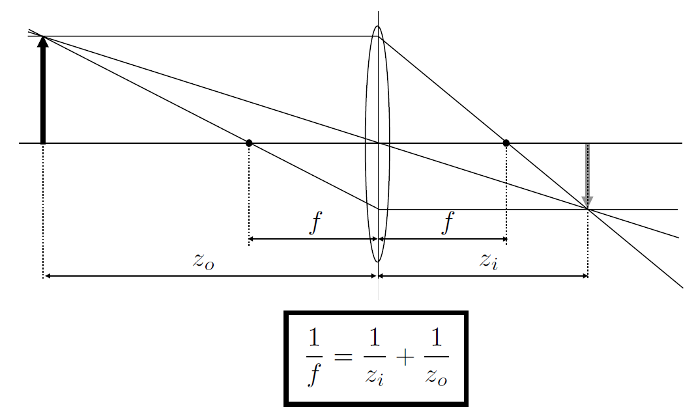
Gauss' Ray Diagrams
高斯射线图
{kind=link}
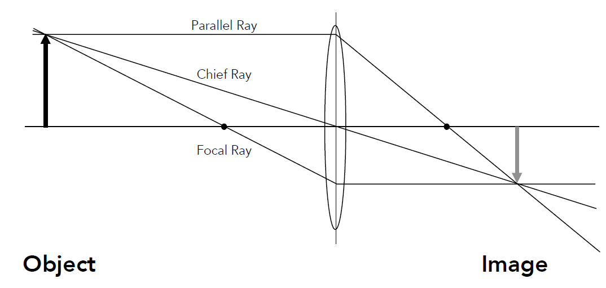
Gauss' Ray Tracing Construction
{kind=link}
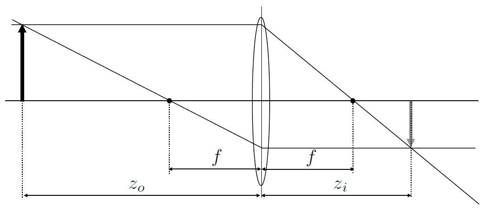
What is the relationship between conjugate depths , ?
共轭深度 ， 之间有什么关系？
{kind=link}
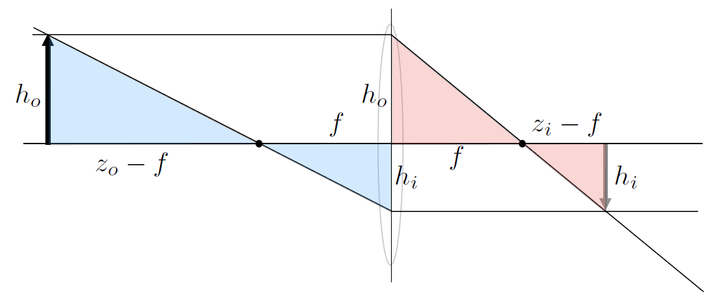
使用相似三角形证明之。
\begin{aligned}\frac{z_o-f}{f}\end{aligned}& =\frac f{z_i-f} \\ (z_o-f)(z_i-f)& =f^2 \\ z_oz_i-(z_o+z_i)f+f^2& =f^2 \\ z_{o}z_{i}& =(z_o+z_i)f \\ \frac1f& =\frac1{z_i}+\frac1{z_o} \end{aligned}$$ --- **Thin Lens Demonstration**  - [Gaussian lens formula (stanford.edu)](https://graphics.stanford.edu/courses/cs178-10/applets/gaussian.html) 这个网站可以让你玩透镜（不过好像要 flash） ### Defocus Blur **Computing Circle of Confusion (CoC) Size** 计算弥散圆 (CoC) 大小  Circle of confusion is proportional to the size of the aperture 弥散圆 $C$ 与光圈大小 $A$ 成正比 $$\frac{C}{A}=\frac{d'}{z_i}=\frac{|z_s-z_i|}{z_i}$$ --- **CoC vs. Aperture Size** CoC 与孔径尺寸  --- **Revisiting F-Number (a.k.a. F-Stop)** > F 数（F-number）是用来描述光圈大小的参数，通常用数字表示，如$f/2.8$、$f/4$等。它是焦距与光圈直径的比值，通常用 $F$ 表示。$F$ 数越小，光圈越大，光线通过的量越多，进而进入相机的光线越多，使得图像更亮。而 $F$ 数越大，光圈越小，光线通过的量越少，进入相机的光线越少，使得图像更暗。 $F$ 数的选择不仅影响了照片的曝光量，还影响了景深（即照片中清晰区域的范围）。较小的F数通常对应较大的光圈直径，会产生较小的景深，使得背景模糊，这在肖像摄影中常常被用到。而较大的 $F$ 数通常对应较小的光圈直径，会产生较大的景深，使得照片中的前景和背景都能保持清晰，这在风景摄影中常常被用到。 重新审视 $F$ 值（又称 $F$ 档） - Formal definition: The f-number of a lens is defined as the focal length divided by the diameter of the aperture 正式定义：镜头的 $f$ 值定义为焦距除以光圈直径 - Common f-stops on real lenses: 实际镜头的常见 $f$ 值： $1.4, 2, 2.8, 4.0, 5.6, 8, 11, 16, 22, 32$ - An f-stop of $2$ is sometimes written $f/2$, reflecting the fact that the absolute aperture diameter ($A$) can be computed by dividing focal length ($f$) by the relative aperture ($N$). $f$ 值 $2$ 有时写为 $f/2$，这反映了绝对光圈直径 ($A$) 可以通过将焦距 ($f$) 除以相对光圈 ($N$) 来计算。 --- **Example F-Stop Calculations**  $$\begin{aligned}D&=50\mathrm{mm}\\f&=100\mathrm{mm}\\N&=f/D=2\end{aligned}$$  $$\begin{aligned}D&=100\text{mm}\\f&=200\text{mm}\\N&=f/D=2\end{aligned}$$  $$\begin{aligned}D&=100\text{mm}\\f&=400\text{mm}\\N&=f/D=4\end{aligned}$$ --- **Size of CoC is Inversely Proportional to F-Stop** CoC 的大小与 F 值成反比  $$C=A\frac{|z_s-z_i|}{z_i}=\frac fN\frac{|z_s-z_i|}{z_i}$$ ### Ray Tracing Ideal Thin Lenses 光线追踪理想薄透镜 --- **Examples of Renderings with Lens Focus** 镜头聚焦渲染示例  --- **Ray Tracing for Defocus Blur (Thin Lens)** 散焦模糊的光线追踪（薄透镜）  (One possible) Setup: （一种可能）设置 - Choose sensor size, lens focal length and aperture size 选择传感器尺寸、镜头焦距和光圈大小 - Choose depth of subject of interest $z_o$ 选择感兴趣的主体深度 $z_o$ - Calculate corresponding depth of sensor $z_i$ from thin lens equation 根据薄透镜方程计算相应的传感器深度 $z_i$ Rendering: - For each pixel $x'$ on the sensor (actually, film (胶片)) 对于传感器上的每个像素 $x'$（实际上是胶片） - Sample random points $x''$ on lens plane 在镜头平面上随机采样点 $x''$ - You know the ray passing through the lens will hit $x'''$ 您知道穿过镜头的光线将击中 x''' (because x''' is in focus, consider virtual ray ($x'$, center of the lens)) （因为 $x'''$ 处于焦点，所以考虑虚拟光线（$x'$，镜头中心）） - Estimate radiance on ray $x''\to x'''$ 估计光线 $x''\to x'''$ 上的辐射度 ### Depth of Field  Set circle of confusion as the maximum permissible blur spot on the image plane that will appear sharp under final viewing conditions 将弥散圆设置为图像平面上允许的最大模糊点，在最终观看条件下看起来清晰 --- **Circle of Confusion for Depth of Field**  i.e. depth range in a scene where the corresponding CoC is considered small enough 即场景中的深度范围，其中相应的 CoC 被认为足够小 --- **Depth of Field (FYI)**  $$\begin{aligned} \frac{d_N-d_S}{d_N}& =\frac{C}{A} \\ \frac{d_S-d_F}{d_F}& =\frac{C}{A} \\ \text{N}& =\frac{f}{A} \\ \begin{aligned}\frac{1}{D_F}+\frac{1}{d_F}\end{aligned}& =\frac1f \\ \begin{aligned}\frac{1}{D_S}+\frac{1}{d_S}\end{aligned}& =\frac1f \\ \begin{aligned}\frac{1}{D_N}+\frac{1}{d_N}\end{aligned}& =\frac1f \end{aligned}$$ $$\mathrm{DOF}=D_F-D_N$$ $$\begin{aligned}D_{F}&=\frac{D_{S}f^{2}}{f^{2}-NC(D_{S}-f)}&D_{N}&=\frac{D_{S}f^{2}}{f^{2}+NC(D_{S}-f)}\end{aligned}$$ --- **DOF Demonstration (FYI)**  - [Depth of field (stanford.edu)](http://graphics.stanford.edu/courses/cs178/applets/dof.html) 这个网站可以让你玩一玩景深区域。 ## Lecture 20 Color and Perception ### Light Field / Lumigraph 光场/发光图  从真实的三维世界中观察到一副二维图像。  假设在人眼面前呈现一块 Painted backdrop 彩绘背景，这幅背景发出的光与三维场景发出的光一模一样，那么观察到的二维图像也是相同的。 ### The Plenoptic Function（全光函数）  Q: What is the set of all things that we can ever see? 问：我们能看到的所有事物的集合是什么？ A: The Plenoptic Function (Adelson & Bergen) 答：全光功能 (Adelson & Bergen) Let' s start with a stationary person and try toparameterize everything that he can see... 让我们从一个静止的人开始，尝试参数化他能看到的一切...... --- **Grayscale snapshot** 灰度快照  $$P(\theta, \phi)$$ is intensity of light 光的强度 - Seen from a single view point 从单一视角看 - At a single time 看一次 - Averaged over the wavelengths of the visible spectrum 可见光谱波长的平均值 (can also do $P(x,y)$, but spherical coordinate are nicer) （也可以用 $P(x,y)$，但球坐标更好） --- **Grayscale snapshot** 灰度快照  $P(\theta,\phi,\lambda)$ is intensity of light 光的强度 - Seen from a single view point 从单一视角看 - At a single time 看一次 - As a function of wavelength 作为波长的函数 --- **A movie**  $$P(\theta,\phi,\lambda,t)$$ is intensity of light 光的强度 - Seen from a single view point 从单一视角看 - Over time 随着时间的推移（一段序列） - As a function of wavelength 作为波长的函数 --- **Holographic movie** 全息电影  $$P(\theta,\phi,\lambda,t,V_X,V_Y,V_Z)$$ is intensity of light 光的强度 - Seen from **ANY** viewpoint 从任何角度看 - Over time 随着时间的推移 - As a function of wavelength 作为波长的函数 --- **The Plenoptic Function** - Can reconstruct every possible view, at every moment, from every position, at every wavelength 可以在每个时刻、每个位置、每个波长重建每个可能的视图 - Contains every photograph, every movie, everything that anyone has ever seen! it completely captures our visual reality! Not bad for a function... 包含每张照片、每部电影、任何人见过的一切！ 它完全捕捉了我们的视觉现实！ 对于功能来说还不错... --- **Sampling Plenoptic Function (top view)** 采样全光功能（顶视图）  --- **Ray** 射线 Let's not worry about time and color: 我们不用担心时间和颜色：  5D - 3D position $V_X,V_Y,V_Z$ - 2D direction $\theta.\phi$ --- **Ray Reuse** 射线重用 Infinite line 无限线 - Assume light is constant (vacuum) 假设光恒定（真空）  用空间中两个点描述一个射线 4D - 2D direction 2D 方向 - 2D position 2D 位置 - non-dispersive medium 非色散介质 --- **Only need plenoptic surface** 只需要全光面  Figure 1: The surface of a cube holds all the radiance informationdue to the enclosed obiect. 图 1：立方体的表面保存了由于封闭物体而产生的所有辐射信息。 --- **Synthesizing novel views** 综合新颖的观点  --- **Lumigraph / Lightfield** Outside convex space 外凸空间  用一个平面，使其发出的光与物体发出的光相同。 --- **Lumigraph - Organization**  用 4D 描述平面中发出的光（平面上的两个点） - 2D position - 2D direction  Hold $s$, $t$ constant 保持 $s$、$t$ 不变 Let $u$, $v$ vary 令 $u$、$v$ 变化 An image 一个图像  多个 $t$ 一个 $v$，表示多个摄像机看一个物体。 多个 $v$ 一个 $t$，表示从多个角度看一个物体。 --- **Stanford camera array** 斯坦福相机阵列  好多相机，真奢华！ --- **Integral Imaging ("Fly's Eye" Lenslets)** 积分成像（“复眼”小透镜）  Spatially-multiplexed light field capture using lenslets: 使用小透镜进行空间复用光场捕获： - Impose fixed trade-off between spatial and angular resolution 在空间分辨率和角度分辨率之间进行固定的权衡 ### Light Field Camera **The Lytro Light Field Camera** Lytro 光场相机  Lytro: founded by Prof. Ren Ng (UC Berkeley) Lytro：由 Ren Ng 教授（加州大学伯克利分校）创立 Microlens design 微透镜设计 Most significant function 最重要的功能 - Computational Refocusing 计算重新聚焦 (virtually changing focal length & aperture size, etc. after taking the photo) （拍照后虚拟改变焦距和光圈大小等）  Understanding - Each pixel (irradiance) is now stored as a block of pixels (radiance) **每个像素（辐照度）现在存储为像素块（辐照度）** - A close-up view of a picture taken 拍摄照片的特写视图  How to get a "regular" photo from the light field photo? 如何从光场照片中得到一张“规则”的照片？ - A simple case — always choose the pixel at the bottom of each block 一个简单的情况 - 始终选择每个块底部的像素 - Then the central ones & the top ones 然后是中心的和顶部的 - Essentially "moving the camera around" 本质上是“移动相机” Computational / digital refocusing 计算/数字重新聚焦 - Same idea: visually changing focal length, picking the refocused ray directions accordingly 相同的想法：视觉上改变焦距，相应地选择重新聚焦的光线方向  In all, all these functionalities are available because 总而言之，所有这些功能都可用，因为 - The light field contains everything 光场包含一切 Any problems to light field cameras? 光场相机有什么问题吗？ - Insufficient spatial resolution 空间分辨率不足 (same film used for both spatial and directional information) （同一个影像用于空间和方向信息） - High cost 成本高 (intricate designation of microlenses) 用一个微透镜来描述一个像素，微透镜本身结构是很复杂的 - Computer Graphics is about trade-offs 计算机图形学是关于权衡的 ### Physical Basis of Color **The Fundamental Components of Light** 光的基本组成部分  - Newton showed sunlight can be subdivided into a rainbow with a prism 牛顿证明阳光可以用棱镜细分成彩虹 - Resulting light cannot be further subdivided with a second prism 产生的光不能用第二个棱镜进一步细分 --- **The Visible Spectrum of Light** 光的可见光谱  Electromagnetic radiation 电磁辐射 - Oscillations of different frequencies (wavelengths) 不同颜色的光是由不同频率（波长）的振荡导致的 红光波长长，紫光波长短 --- **Spectral Power Distribution (SPD)** 光谱功率分布 (SPD) Salient property in measuring light 测量光的显着特性 - The amount of light present at each wavelength 每个波长存在的光量 - Units: 单位： - radiometric units / nanometer (e.g. watts / nm) 辐射单位/纳米（例如瓦/纳米） - Can also be unit-less 也可以无单位 - Often use "relative units" scaled to maximum wavelengthfor comparison across wavelengths when absolute units are not important 当绝对单位不重要时，通常使用缩放到最大波长的“相对单位”进行波长比较 --- **Daylight Spectral Power Distributions Vary** 日光光谱功率分布各不相同  --- **Spectral Power Distribution of Light Sources** 光源的光谱功率分布 Describes distribution of energy by wavelength 描述按波长的能量分布  --- **Linearity of Spectral Power Distributions** 光谱功率分布的线性度  --- **What is Color?** - Color is a phenomenon of human perception; it is not a universal property of light 颜色是人类感知的一种现象；它不是光的普遍属性 - Different wavelengths of light are not "colors" 不同波长的光不是“颜色” ### Biological Basis of Color **Anatomy of The Human Eye** 人眼的剖面图  瞳孔相当于光圈，晶状体相当于凸透镜，视网膜相当于屏幕。 --- **Retinal Photoreceptor Cells: Rods and Cones** 视网膜感光细胞：视杆细胞和视锥细胞  Rods are primary receptors in very low light ("scotopic" conditions), 视杆细胞是极弱光（“暗视”条件）下的主要受体， e.g. dim moonlight 例如 昏暗的月光 - ~120 million rods in eye 眼睛中约有 1.2 亿个视杆细胞 - Perceive only shades of gray, no color 只感知灰色阴影，没有颜色 Cones are primary receptors in typical light levels ("photopic") 视锥细胞是典型光照水平（“明视”）下的主要受体 - ~6-7 million cones in eye 眼睛中约有 6-700 万个视锥细胞 - Three types of cones, each with different spectral sensitivity 三种类型的视锥细胞，每种都有不同的光谱灵敏度 - Provide sensation of color 提供色彩感觉 --- **Spectral Response of Human Cone Cells** 人类视锥细胞的光谱响应 Three types of cone cells: S, M, and L (corresponding to peak response at short, medium, and long wavelengths) 三种类型的视锥细胞：S、M 和 L（对应于短、中和长波长的峰值响应）  --- **Fraction of Three Cone Cell Types Varies Widely** 三种视锥细胞类型的比例差异很大  Distribution of cone cells at edge of fovea in 12 different humans with normal color vision. Note high variability of percentage of different cone cell types. (false color image) 12 名具有正常色觉的不同人的中央凹边缘视锥细胞的分布。 请注意不同视锥细胞类型的百分比差异很大。 （假彩色图像） ### Tristimulus Theory of Color **Spectral Response of Human Cone Cells** 人类视锥细胞的光谱响应 Now we have three detectors ($S$, $M$, $L$ cone cells), each with a different spectral response curve 现在我们有三个探测器（$S$、$M$、$L$ 视锥细胞）， 每个都有不同的光谱响应曲线  感测器感受到的感光量： $$S=\int r_S(\lambda)s(\lambda)d\lambda\\M=\int r_M(\lambda)s(\lambda)d\lambda\\L=\int r_L(\lambda)s(\lambda)d\lambda$$ --- **The Human Visual System** 人类视觉系统 - Human eye does not measure and brain does not receive information about each wavelength of light 人眼无法测量，大脑也无法接收有关每种光波长的信息 - Rather, the eye "sees" only three response values ($S$, $M$, $L$), and this is only info available to brain 相反，眼睛仅“看到”三个响应值（$S$、$M$、$L$），而这只是大脑可获得的信息  ### Metamerism 同色异谱 --- **Metamers** 等色异构体 Metamers are two different spectra (∞-dim) that project to the same (S,M,L) (3-dim) response. 等色异构体是两个不同的光谱（无穷大），投影到相同的（S，M，L）（3 维）响应。 - These will appear to have the same color to a human 对于人类来说，它们看起来具有相同的颜色 The existence of metamers is critical to color reproduction 同色异谱的存在对于色彩再现至关重要 - Don' t have to reproduce the full spectrum of a real world scene 不必再现真实世界场景的全部光谱 - Example: A metamer can reproduce the perceived color of a real-world scene on a display with pixels of only three colors 示例：**同色异谱可以在仅用三种颜色的像素的显示器上再现真实世界场景的感知颜色** **Metamerism is a Big Effect**  虽然曲线不同，但只要 $$S=\int r_S(\lambda)s(\lambda)d\lambda\\M=\int r_M(\lambda)s(\lambda)d\lambda\\L=\int r_L(\lambda)s(\lambda)d\lambda$$ 值相同也可。 --- **Metamerism** The theory behind color matching 色彩搭配背后的理论  ### Color Reproduction / Matching  **Additive Color** 加法颜色模型 - Given a set of primary lights, each with its own spectral distribution (e.g. R,G,B display pixels): 给定一组主光，每个主光都有自己的光谱分布（例如 R、G、B 显示像素）： $s_R(\lambda),s_G(\lambda),s_B(\lambda)$ - Adjust the brightness of these lights and add them together: 调整这些灯的亮度并将它们加在一起： $R\operatorname{s}_{R}(\lambda)+G\operatorname{s}_{G}(\lambda)+B\operatorname{s}_{B}(\lambda)$ - The color is now described by the scalar values: 颜色现在由标量值： $R,G,B$ --- **Additive Color Matching Experiment** 颜色匹配实验   The primary color amounts needed for a match 匹配所需的原色数量 调整三个灯的强度直到匹配原始灯光颜色。  We say a "negative" amount of $p_2$ was needed to make the match, because we added it to the test color' s side. 我们说需要“负”量的 $p_2$ 来进行匹配，因为我们将其添加到测试颜色的一侧（不然匹配不了）。 --- **CIE RGB Color Matching Experiment** CIE RGB 配色实验  Same setup as additive color matching before, but primaries are monochromatic light (single wavelength) 与之前的加色匹配相同的设置，但原色是单色光（单波长）  The test light is also a monochromatic light 测试光也是单色光 --- **CIE RGB Color Matching Functions** CIE RGB 配色函数  Graph plots how much of each CIE RGB primary light must be combined to match a monochromatic light of wavelength given on x-axis 该图绘制了每种 CIE RGB 原色光必须组合多少才能匹配 x 轴上给定波长的单色光 --- **Color Reproduction with Matching Functions** 具有匹配功能的色彩再现 For any spectrum s, the perceived color is matched by the following formulas for scaling the CIE RGB primaries 对于任何光谱，感知的颜色都与以下缩放 CIE RGB 原色的公式相匹配  $$\begin{gathered} R_{\mathrm{CIERGB}} =\int_\lambda s(\lambda)\bar{r}(\lambda)d\lambda \\ G_{\mathrm{CIERGB}} =\int_{\lambda}s(\lambda)\bar{g}(\lambda)d\lambda \\ B_{\text{CIE RGB}} =\int_{\lambda}s(\lambda)\overline{b}(\lambda)d\lambda \end{gathered}$$ ### Color Spaces **Standard Color Spaces** Standardized RGB (sRGB) 标准化 RGB (sRGB) - makes a particular monitor RGB standard 制定特定的显示器 RGB 标准 - other color devices simulate that monitor by calibration 其他彩色设备通过校准模拟该显示器 - widely adopted today 如今已被广泛采用 - gamut (?) is limited 色域 (?) 有限 --- **A Universal Color Space: CIE XYZ** 通用色彩空间：CIE XYZ  Imaginary set of standard color primaries $X$, $Y$, $Z$ 假想的一组标准原色 $X$、$Y$、$Z$ - Primary colors with these matching functions do not exist 具有这些匹配功能的原色不存在 - $Y$ is luminance (brightness regardless of color) $Y$ 是亮度（亮度与颜色无关） Designed such that 设计成这样 - Matching functions are strictly positive 匹配函数严格为正 - Span all observable colors 涵盖所有可观察到的颜色 --- **Separating Luminance, Chromaticity** 分离亮度、色度  Luminance: $Y$ 亮度：$Y$ Chromaticity: $x$, $y$, $z$, defined as 色度：$x$、$y$、$z$，定义为 $$\begin{gathered} x=\frac{X}{X+Y+Z} \\ y=\frac{Y}{X+Y+Z} \\ z=\frac{Z}{X+Y+Z} \end{gathered}$$ - since $x + y + z = 1$, we only need to record two of the three 由于 $x + y + z = 1$，我们只需要记录三个中的两个（便于可视化） - usually choose $x$ and $y$, leading to $(x, y)$ coords at a specific brightness $Y$ 通常选择 $x$ 和 $y$，导致特定亮度 $Y$ 处的 $(x, y)$ 坐标 --- **CIE Chromaticity Diagram** CIE 色度图  The curved boundary 弯曲的边界 - named spectral locus 命名光谱轨迹 - corresponds to monochromatic light 对应于单色光 (each point representing a pure color of a single wavelength) （每个点代表单一波长的纯色） Any color inside is less pure 里面任何颜色都不那么纯正 - i.e. mixed 即混合（越靠近边缘越纯正，中心是白色，最不纯正） --- **Gamut** 色域 Gamut is the set of chromaticities generated by a set of color primaries 色域是由一组原色生成的色度集合 Different color spaces represent different ranges of colors 不同的颜色空间代表不同的颜色范围 So they have different gamuts, i.e. they cover different regions on the chromaticity diagram 因此它们具有不同的色域，即它们覆盖色度图上的不同区域  不同颜色模型所能表示的颜色范围。 ### Perceptually Organized Color Spaces **HSV Color Space (Hue-Saturation-Value)**  Axes correspond to artistic characteristics of color 坐标轴对应于色彩的艺术特征 Widely used in a "color picker" 广泛应用于“颜色选择器” --- **Perceptual Dimensions of Color** 颜色的感知维度 Hue 色调 - the "kind" of color, regardless of attributes 颜色的“种类”，与属性无关 - colorimetric correlate: dominant wavelength 比色相关：主波长 - artist' s correlate: the chosen pigment color 艺术家关联：所选颜料颜色 Saturation 饱和 - the "colorfulness" “色彩” - colorimetric correlate: purity 比色关联：纯度 - artist' s correlate: fraction of paint from the colored tube 艺术家的关联：彩色管中油漆的一部分 Lightness (or value) 亮度（或值） - the overall amount of light 总光量 - colorimetric correlate: luminance 色度关联：亮度 - artist' s correlate: tints are lighter, shades are darker 艺术家的关联：色调较浅，阴影较深 --- **CIELAB Space (AKA L\*a\*b\*)**  A commonly used color space that strives for perceptual uniformity 力求感知均匀性的常用色彩空间 - L\* is lightness (brightness) L\* 是亮度（亮度） - a\* and b\* are color-opponent pairs a\* 和 b\* 是颜色反色对 - a\* is red-green a\* 是红绿 - b\* is blue-yellow b\* 是蓝黄色 --- **Opponent Color Theory** 互补色 There’s a good neurological basis for the color space dimensions in CIE LAB CIE LAB 中的色彩空间维度有良好的神经学基础 - the brain seems to encode color early on using three axes: 大脑似乎很早就使用三个轴对颜色进行编码： - white — black, red — green, yellow — blue 白色 — 黑色、红色 — 绿色、黄色 — 蓝色 （为什么红色的反色是绿色，黄色的反色是蓝色，这是由大脑决定的） - the white — black axis is lightness; the others determine hue and saturation 白色-黑色轴是亮度； 其他决定色调和饱和度 - one piece of evidence: you can have a light green, a dark green, a yellow-green, or a blue-green, but you can' t have a reddish green (just doesn' t make sense) 一个证据：你可以有浅绿色、深绿色、黄绿色或蓝绿色，但不能有红绿色(这没有意义) - thus red is the opponent to green 因此红色是绿色的反色 - another piece of evidence: afterimages (following slides) 另一个证据：残像（以下幻灯片）  盯着这张照片盯久了，再看白色会短暂出现五星红旗的样子。 --- **Everything is Relative**   大脑自动觉得两种颜色是不同的。 --- **CMYK: A Subtractive Color Space**  Subtractive color model 减色模型 - The more you mix, the darker it will be 混合得越多，颜色就越深 Cyan, Magenta, Yellow, and Key 青色、洋红色、黄色和基色 Widely used in printing 广泛应用于印刷 Question: - If mixing C, M and Y gives K, 如果混合 C、M 和 Y 得到 K， why do you need K? 为什么需要 K？（K 的成本低，C、M 和 Y 成本高）